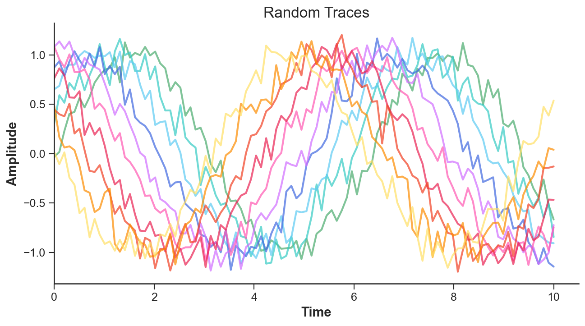

find-your-self source
For travelling: a trip planner for routes that branch. Works offline; data stays on your device or in a GitHub repo, so AI can edit it.
Hello, my name is Barton and I'm a biophysics researcher focused on single-molecule biophysics.
I also like to get busy with other projects. They're very much vibe coded, but I think they could be of use to others anyway 😁
For travelling: a trip planner for routes that branch. Works offline; data stays on your device or in a GitHub repo, so AI can edit it.

A GitHub backend for remote storage for static sites, using each person's own GitHub account. It powers Go Find Yourself.

Good and beautiful plots: matplotlib and Plotly defaults, colour palettes and perceptual colormaps for posters, presentations and reports.
A hatred of Overleaf and the default LaTeX aesthetic: a TU Delft style report template with a ready-to-go VS Code workspace.

Image tracing that understands the picture: SAM 2.1 / SAM 3 segmentation, one flat-colour SVG path per object.

I love the game Pixies: an online score card tracker, alternate rules, and a bot you can practise against.